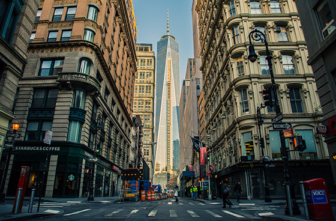
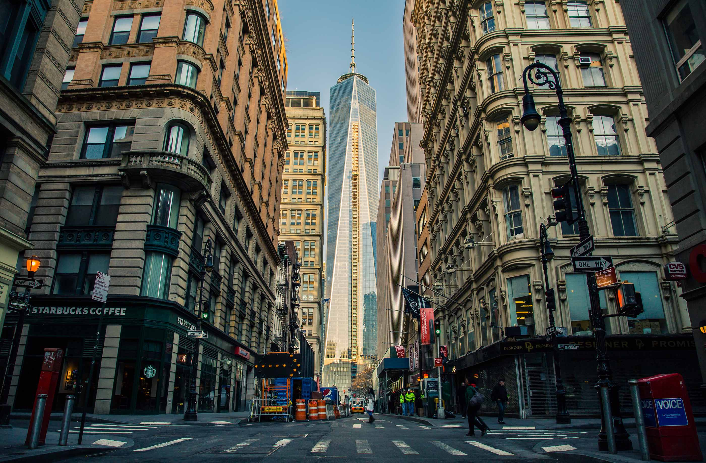
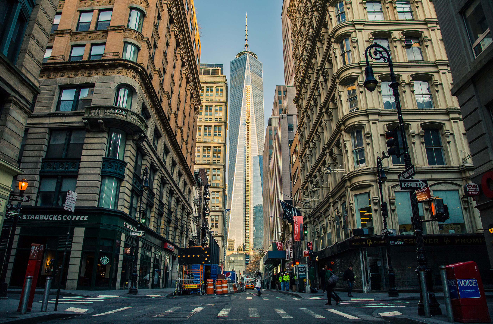

@10x Retina Images Test for iOS
Images in iOS Safari can be scaled up to 10x. View this page on your iPad or iPhone, pinch to zoom and see the differences among these images.
Source at GitHub
PNG Test
logo.png - 6 KB (319 × 97)
logo@2x.png - 12 KB (638 × 194)
logo@10x.png - 86 KB (3190 × 970)
photo.jpg - 38 KB (270 × 178)

photo@2x.jpg - 145 KB (560 × 368)

photo@10x.jpg - 517 KB (2800 × 1841)

photo-high-profile@10x.jpg - 1.3 MB (2800 × 1841)
Tunghsiao Liu, 2014